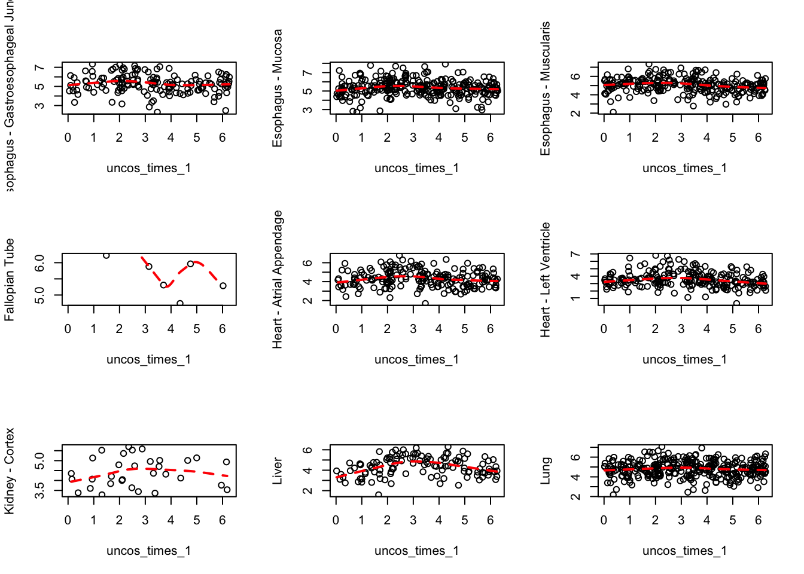
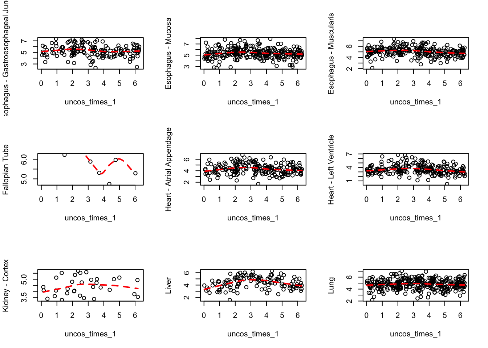

In this script, we look at the death time comparison problem in the context of using lfsr for the adaptive shrinkage on the tissues for each gene. Adaptive shrinkage is performed using a normal distribution centered about 0.
## out$name
## 1 aryl hydrocarbon receptor nuclear translocator like
## 2 period circadian clock 2
## 3 circadian associated repressor of transcription
## 4 solute carrier family 17 member 9
## 5 <NA>
## 6 <NA>
## 7 period circadian clock 3
## 8 adenosine deaminase 2
## 9 L3MBTL2, polycomb repressive complex 1 subunit
## 10 D-box binding PAR bZIP transcription factor
## out$summary
## 1 The protein encoded by this gene is a basic helix-loop-helix protein that forms a heterodimer with CLOCK. This heterodimer binds E-box enhancer elements upstream of Period (PER1, PER2, PER3) and Cryptochrome (CRY1, CRY2) genes and activates transcription of these genes. PER and CRY proteins heterodimerize and repress their own transcription by interacting in a feedback loop with CLOCK/ARNTL complexes. Defects in this gene have been linked to infertility, problems with gluconeogenesis and lipogenesis, and altered sleep patterns. Several transcript variants encoding different isoforms have been found for this gene.
## 2 This gene is a member of the Period family of genes and is expressed in a circadian pattern in the suprachiasmatic nucleus, the primary circadian pacemaker in the mammalian brain. Genes in this family encode components of the circadian rhythms of locomotor activity, metabolism, and behavior. This gene is upregulated by CLOCK/ARNTL heterodimers but then represses this upregulation in a feedback loop using PER/CRY heterodimers to interact with CLOCK/ARNTL. Polymorphisms in this gene may increase the risk of getting certain cancers and have been linked to sleep disorders.
## 3 <NA>
## 4 This gene encodes a member of a family of transmembrane proteins that are involved in the transport of small molecules. The encoded protein participates in the vesicular uptake, storage, and secretion of adenoside triphosphate (ATP) and other nucleotides. A mutation in this gene was found in individuals with autosomal dominant disseminated superficial actinic porokeratosis-8. Alternative splicing results in multiple transcript variants.
## 5 <NA>
## 6 <NA>
## 7 This gene is a member of the Period family of genes and is expressed in a circadian pattern in the suprachiasmatic nucleus, the primary circadian pacemaker in the mammalian brain. Genes in this family encode components of the circadian rhythms of locomotor activity, metabolism, and behavior. This gene is upregulated by CLOCK/ARNTL heterodimers but then represses this upregulation in a feedback loop using PER/CRY heterodimers to interact with CLOCK/ARNTL. Polymorphisms in this gene have been linked to sleep disorders. Multiple transcript variants encoding different isoforms have been found for this gene.
## 8 This gene encodes a member of a subfamily of the adenosine deaminase protein family. The encoded protein is one of two adenosine deaminases found in humans, which regulate levels of the signaling molecule, adenosine. The encoded protein is secreted from monocytes undergoing differentiation and may regulate cell proliferation and differentiation. This gene may be responsible for some of the phenotypic features associated with cat eye syndrome. Alternative splicing results in multiple transcript variants.
## 9 <NA>
## 10 The protein encoded by this gene is a member of the PAR bZIP transcription factor family and binds to specific sequences in the promoters of several genes, such as albumin, CYP2A4, and CYP2A5. The encoded protein can bind DNA as a homo- or heterodimer and is involved in the regulation of some circadian rhythm genes.
## out$name
## 1 aryl hydrocarbon receptor nuclear translocator like
## 2 period circadian clock 2
## 3 circadian associated repressor of transcription
## 4 solute carrier family 17 member 9
## 5 <NA>
## 6 adenosine deaminase 2
## 7 D-box binding PAR bZIP transcription factor
## 8 collagen type XI alpha 2 chain
## 9 solute carrier family 25 member 17
## 10 nuclear receptor subfamily 1 group D member 1
## out$summary
## 1 The protein encoded by this gene is a basic helix-loop-helix protein that forms a heterodimer with CLOCK. This heterodimer binds E-box enhancer elements upstream of Period (PER1, PER2, PER3) and Cryptochrome (CRY1, CRY2) genes and activates transcription of these genes. PER and CRY proteins heterodimerize and repress their own transcription by interacting in a feedback loop with CLOCK/ARNTL complexes. Defects in this gene have been linked to infertility, problems with gluconeogenesis and lipogenesis, and altered sleep patterns. Several transcript variants encoding different isoforms have been found for this gene.
## 2 This gene is a member of the Period family of genes and is expressed in a circadian pattern in the suprachiasmatic nucleus, the primary circadian pacemaker in the mammalian brain. Genes in this family encode components of the circadian rhythms of locomotor activity, metabolism, and behavior. This gene is upregulated by CLOCK/ARNTL heterodimers but then represses this upregulation in a feedback loop using PER/CRY heterodimers to interact with CLOCK/ARNTL. Polymorphisms in this gene may increase the risk of getting certain cancers and have been linked to sleep disorders.
## 3 <NA>
## 4 This gene encodes a member of a family of transmembrane proteins that are involved in the transport of small molecules. The encoded protein participates in the vesicular uptake, storage, and secretion of adenoside triphosphate (ATP) and other nucleotides. A mutation in this gene was found in individuals with autosomal dominant disseminated superficial actinic porokeratosis-8. Alternative splicing results in multiple transcript variants.
## 5 <NA>
## 6 This gene encodes a member of a subfamily of the adenosine deaminase protein family. The encoded protein is one of two adenosine deaminases found in humans, which regulate levels of the signaling molecule, adenosine. The encoded protein is secreted from monocytes undergoing differentiation and may regulate cell proliferation and differentiation. This gene may be responsible for some of the phenotypic features associated with cat eye syndrome. Alternative splicing results in multiple transcript variants.
## 7 The protein encoded by this gene is a member of the PAR bZIP transcription factor family and binds to specific sequences in the promoters of several genes, such as albumin, CYP2A4, and CYP2A5. The encoded protein can bind DNA as a homo- or heterodimer and is involved in the regulation of some circadian rhythm genes.
## 8 This gene encodes one of the two alpha chains of type XI collagen, a minor fibrillar collagen. It is located on chromosome 6 very close to but separate from the gene for retinoid X receptor beta. Type XI collagen is a heterotrimer but the third alpha chain is a post-translationally modified alpha 1 type II chain. Proteolytic processing of this type XI chain produces PARP, a proline/arginine-rich protein that is an amino terminal domain. Mutations in this gene are associated with type III Stickler syndrome, otospondylomegaepiphyseal dysplasia (OSMED syndrome), Weissenbacher-Zweymuller syndrome, autosomal dominant non-syndromic sensorineural type 13 deafness (DFNA13), and autosomal recessive non-syndromic sensorineural type 53 deafness (DFNB53). Alternative splicing results in multiple transcript variants. A related pseudogene is located nearby on chromosome 6.
## 9 This gene encodes a peroxisomal membrane protein that belongs to the family of mitochondrial solute carriers. It is expressed in the liver, and is likely involved in transport. Alternative splicing results in multiple transcript variants.
## 10 This gene encodes a transcription factor that is a member of the nuclear receptor subfamily 1. The encoded protein is a ligand-sensitive transcription factor that negatively regulates the expression of core clock proteins. In particular this protein represses the circadian clock transcription factor aryl hydrocarbon receptor nuclear translocator-like protein 1 (ARNTL). This protein may also be involved in regulating genes that function in metabolic, inflammatory and cardiovascular processes.
The important genes are ENSG00000133794 or ARNTL, ENSG00000132326 or PER2, ENSG00000159208 or CIART, ENSG00000101194 or SLC17A7 and ENSG0000025513.
ARNTL encodes for a transcription factor with a basic helix-loop-helix (bHLH) and a PAS domain. The human ARNTL gene has a predicted 24 exons and is located on the p15 band of the 11th chromosome.[3] The BMAL1 protein is 626 amino acids long and plays a key role as one of the positive elements in the mammalian autoregulatory transcription translation negative feedback loop (TTFL), which is responsible for generating molecular circadian rhythms. One of ARNTL protein’s earliest discovered functions in circadian regulation was related to the CLOCK-BMAL1 (CLOCK-ARNTL) heterodimer, which would bind through an E-box enhancer to activate the transcription of the gene encoding vasopressin. Article.
Circadian variations of clock gene Per2 and cell cycle genes in different stages of carcinogenesis in golden hamster buccal mucosa. Circadian (24-hour) rhythms and cell division are fundamental biological systems in most organisms. There is substantial evidence that, in mammals, circadian rhythms affect the timing of cell divisions in vivo. Day-night variations in both the mitotic index and DNA synthesis occur in many tissues (e.g., oral mucosa, tongue keratinocytes, intestinal epithelium, skin, and bone marrow) some of which persist even in constant darkness. However, how the circadian clock controls the timing of cell divisions is not known. Article, Article.
To determine whether the circadian clock continues to function during the massive entry of hepatocytes into the cell cycle, we examined expression profiles of clock components PER1, PER2, CRY1, and Bmal1 (ARNTL). Article.
The clock gene Per2 links the circadian system to the estrogen receptor. Article.
CIART is a circadian associated repressor of transcription. Article. I did not find much literature on CIART. But it lies in the superpathway of Circadian entrainment. Source.
times <- strsplit(as.character(sample_attributes$DTHTIME), "[:]")
time_stamp <- unlist(lapply(times, function(x){
y <- as.numeric(x[1])
z <- as.numeric(x[2])
w <- y*60+z
return(w)
}))/(24*60)
cos_times <- cos(2*pi*time_stamp)
uncos_times <- 2*pi*time_stamp
na_indices <- which(is.na(cos_times))
person_tissue_genes_1 <- person_tissue_genes[-na_indices,,]
cos_times_1 <- cos_times[-na_indices]
uncos_times_1 <- uncos_times[-na_indices]


 
